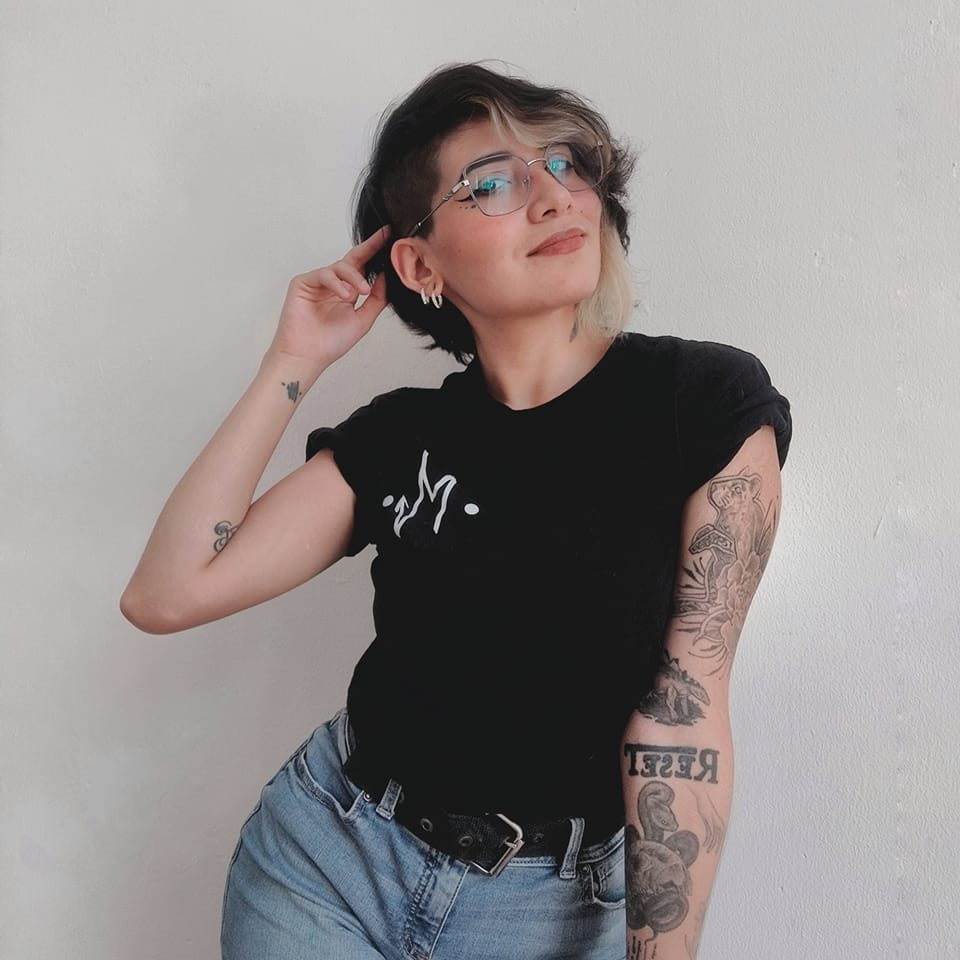

About
Cinthia Parra
Artista originaria de Michoacán que se identifica como •M•, reside en Guadalajara, Jal.
Inicia su carrera de tatuadora en el 2014.
Cuenta con Licenciatura en Artes Visuales Para La Expresión Plástica de la Universidad de Guadalajara, Centro Universitario de Arte Arquitectura y Diseño (CUAAD).

Desarroyo en el tatuaje
A la edad de 18 años comenzó a tatuar, previo de haber obtenido formación en diversos cursos y seminarios (Introducción al tatuaje, Asepsia, Práctica y Teoría, Técnicas, etc...).
Tras varios años y al haber experimentado diversas técnicas se inclina hacia el Puntillismo de arrastre, Full Color y Abstracto. Mismos que conforman y enfatiza en el estilo que actualmente esta desarrollando -Superposición de Plano-.